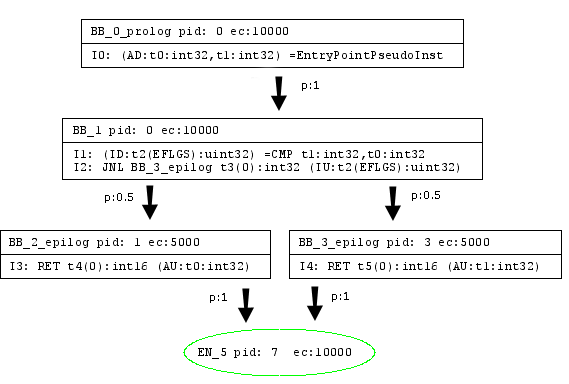
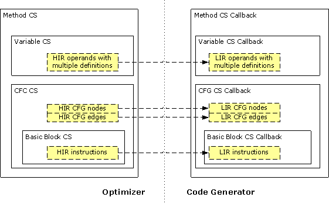
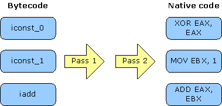
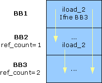

| Version | Version Information | Date |
|---|---|---|
| Initial version | Intel, Nadya Morozova: document created. | September 4, 2006 |
This document describes the internal structure of the Jitrino just-in-time compiler deployed with the virtual machine as part of the DRL (Dynamic Runtime Layer) initiative. The description covers the internal design of this JIT compiler and its interaction with other DRLVM components. In this document, you can find implementation-specific details of the Jitrino compiler. General information on the JIT role in overall virtual machine design and VM-level requirements are out of scope of this document and are covered in the DRLVM Developer's Guide supplied with the VM source code package.
The document is targeted at DRLVM developers with special interest in code compilation algorithms. The information can be helpful for future development of DRL compilation techniques and can serve as an example for those implementing a JIT compiler from scratch. The document assumes that readers understand the concepts of just-in-time compilation and optimization algorithms.
The DRLVM just-in-time compiler description has the following major sections:
This document uses the unified conventions for the DRL documentation kit.
Jitrino is the code name for the just-in-time (JIT) compiler [2] currently shipped with DRLVM. Jitrino comprises two distinct JIT compilers that share source code and are packaged in a single library:
This document describes both compilers and their operation. All references to Jitrino with no subtitle (JET or OPT) specified equally apply to both compilers.
Key features of the JIT compiler include:
Jitrino.OPT also features the following capabilities:
Jitrino compilers provide means to compile and optimize code distributed for Java* run-time environments and to adapt it to various hardware architectures. Figure 1 demonstrates the architecture of the compilers and their interaction with the virtual machine.
Both Jitrino.JET and Jitrino.OPT compilers have a platform-independent Java front-end and a platform-dependent back-end. Compilation connects these and propagates type information extracted by the front-end from the original bytecode to the platform-specific back-ends. Supporting a new hardware platform requires implementation of a new platform-dependent back-end.
Jitrino can follow different code compilation strategies. The compilation process can be optimized for the smallest compilation time, for the best performance or for a compromise of affordable compilation time with reasonable performance. The compilation process can involve the Jitrino.JET baseline compiler, Jitrino.OPT optimizing compiler or both. In most applications, only a few methods consume the majority of time at run time, so that overall performance benefits when Jitrino aggressively optimizes these methods. The Execution Manager defines the actual compilation strategy.
The Jitrino.JET baseline compiler provides the fastest compilation time by translating Java* bytecode directly to native code. This compiler performs a very fast and simple compilation and applies almost no optimizations.
Jitrino.OPT, the main Jitrino compilation engine, provides the most optimized native code by the cost of greater compilation time. The compilation process of the Jitrino.OPT is also shown in Figure 1, with focus on the following:
Note
The Jitrino architecture is modular, which facilitates implementation of more front-ends, such as the Common Language Infrastructure (CLI) bytecode front-end.
This document describes the internal structure of the Jitrino.JET and Jitrino.OPT compilers and the processes running inside them.
Figure 1. Jitrino Compiler Architecture
This part of the document describes the internals of the optimizing compiler Jitrino.OPT.
The pipeline management framework (PMF) defines how the compilation process goes inside Jitrino.OPT. With PMF, the compilation process is represented as a pipeline, which is a linear sequence of steps. Each step stores a reference to an action object, its parameters and other information. Actions represent independent transformations of code, such as optimization passes. Different steps in a pipeline can reference to the same action, for example, to run the same transformation several times. Sequences of steps can vary between pipelines.
To select a pipeline for compiling a given Java* method, the system uses method filters consisting of class and method names and method signatures as the selection criteria. Each JIT instance has one common pipeline with an empty method filter that accepts all methods for compilation. Additionally, optional pipelines with unique and non-empty filter expressions can be created for compiling specific Java * methods sets.
Pipelines in Jitrino.OPT are configured using the VM properties mechanism. PMF parses properties, constructs pipelines and passes parameters to actions. The OPT compiler has no hard-coded pipeline, so you need to configure pipelines in EM configuration files or through VM properties. Understanding pipeline configuration rules is required for using the Jitrino command-line interface and effectively exercising the Jitrino logging system. For details on PMF internals, refer to the PMF Detailed Description.
This section defines the key parts of the compiler. This is only an abstract, logical division matching the key compilation stages. Each logical component includes action(s) that are used consecutively in compilation pipelines.
The bytecode translator is responsible for converting incoming bytecode instructions into a high-level intermediate representation. This IR is of a lower level than the bytecode and breaks complex bytecode operations into several simple instructions to expose more opportunities to later high-level optimization phases. For example, loading an object field is broken up into operations that perform a null check of the object reference, load the base address of the object, compute the address of the field, and load the value at that computed address.
For details on the conversion process, see section Bytecode Translation.
The optimizer includes a set of optimizations independent of the original Java* bytecode and the hardware architecture. A single optimization framework for Java* and CLI programs is used. The optimizer performs a series of transformation passes to optimize the incoming high-level intermediate representation. For a description of applied transformations, see section High-level Optimizations.
After the high-level optimizations (HLO) are applied, the code selector translates the high-level intermediate representation to a low-level intermediate representation. The component is designed so that code generators for different architectures can be plugged into the compiler. To be pluggable, a code generator must implement code selector callback interfaces for each structural entity of a method, such as the whole method, basic blocks, and instructions. During code selection, the selector uses the callback interfaces to translate these entities from HIR to LIR. See section Code Selection for details on the process.
The code generator (CG) is responsible for generation of machine code out of the input high-level intermediate representation. CG accepts the HIR information via the code selector callback interfaces. For details on how the resulting code is produced, see section Code Generation.
The code generator also performs several auxiliary operations, such as:
An intermediate representation (IR) is an internal compiler representation for code being compiled. Jitrino.JET has no intermediate representation of code and directly compiles bytecode into the native code. Jitrino.OPT uses two IR forms: the high-level intermediate representation (HIR) and the low-level intermediate representation (LIR). To compile a method's code, the Jitrino.OPT compiler translates Java* bytecode into a graph-based structure with nodes, edges and instructions. The nodes and edges in the graph denote the control flow of the program. Every node in the graph is populated with instructions that denote the primitive operations.
Example
Here is an example of corresponding Java* code, Java* bytecode and the low-level intermediate representations used in Jitrino.OPT:
Java* code:
public static int max(int x, int y) {
if (x > y) {
return x;
}
return y;
}
Java* bytecode:
public static int max(int, int); Code: 0: iload_0 1: iload_1 2: if_icmple 7 5: iload_0 6: ireturn 7: iload_1 8: ireturn
Jitrino high-level intermediate representation of code:
Jitrino low-level intermediate representation of code:

Both HIR and LIR use a common Control Flow Graph structures and its algorithms; see section Control Flow Graph for the details. This section describes the two intermediate representations currently used in Jitrino in greater detail.
The Jitrino high-level intermediate representation (HIR) is a platform-independent representation of the code being compiled. In HIR, each basic block node consists of a list of instructions, and each instruction includes an operator and a set of operands. HIR supports a single static assignment (SSA) form where each operand has exactly one assignment. The SSA form provides explicit use-def links between operands and their defining instructions, which simplifies and speeds up high-level optimizations. Each HIR instruction and each operand have detailed type information propagated to the back-end at further compilation stages.
The compiler also maintains dominator and loop structure information on HIR for use in optimization and code generation.
Jitrino low-level intermediate representations (LIR) are specific for code generators implementing them. The specifics of the Jitrino IA-32/Intel® 64 CG LIR is that unlike HIR, it does not support SSA form and is designed to be very close to the IA-32 and Intel® 64 architectures.
This part of the document describes the key processes that go inside the Jitrino optimizing compiler.
The initial compilation step is the translation of bytecode into HIR, which goes in the following phases:
High-level optimizations are platform-independent transformations performed by the optimizer. The optimizer applies a set of classical object-oriented optimizations balancing the effectiveness of optimizations with their compilation time. Every high-level optimization is represented as a separate transformation pass over HIR. Each Jitrino.OPT optimization aims at one or more goals, as follows:
Optimization Modes
The Jitrino high-level optimizer supports various optimization modes, which differ by the optimization path and profile used to optimize the code. Different optimization modes are customized for different application types: client applications usually require fast startup time and reasonable response time, whereas server applications require top-level performance in the long run. A particular optimization mode is defined by the following:
Several pre-defined Jitrino optimization modes are stored in the execution manager configuration files, as follows:
You can define the profile to use on the command line. For example, to set JIT to use the server dynamic mode, specify the following option:
-Xem:server
This section defines all optimizations that are currently available in the Jitrino.OPT compiler. Related optimizations are gathered in groups, as follows:
The high-level optimization begins with a set of transformations to enhance the scope of further optimizations, as follows:
devirt) of virtual method calls reduces their
run-time cost and enables the compiler to inline their
targets.inline) removes the
overhead of a direct call and builds the code of the called
method into the code of the caller in place of its call site.
Inlining is an iterative process involving other
optimizations. Inlining goes as follows:
The example below illustrates the inlining algorithm.
Inline(HIR_of_compiled_method) {
current_bytecode_size = HIR_of_compiled_method.get_method().bytecode_size()
find_inline_candidates(HIR_of_compiled_method)
while (true) {
callee = NULL
while (!inline_candidates.empty()) {
callee = inline_candidates.pop()
callee_bytecode_size = callee.bytecode_size()
if ((current_bytecode_size + callee_bytecode_size) < SIZE_THRESHOLD) {
current_bytecode_size += callee_bytecode_size
break;
}
}
if (callee = NULL) {
break;
}
HIR_of_callee = Translator.translate(callee)
Optimizer.optimize(HIR_of_callee, inliner_pipeline)
find_inline_candidates(HIR_of_callee)
HIR_of_compiled_method.integrate(HIR_of_callee)
}
}
find_inline_candidates(method_HIR) {
foreach direct_call in method_HIR {
inline_benefit = compute_inline_benefit(direct_call)
if (inline_benefit > BENEFIT_THRESHOLD) {
inline_candidates.push(direct_call)
}
}
}
lower) performs basic
instruction-level transformations to replace common helper
calls with the corresponding HIR code. A helper call
generally is performance-expensive, so that inlining the
operation performed by a helper method can improve
performance. This is especially true for operations that are
proved to be redundant afterwards.
This set of optimizations aims at eliminating redundant and partially redundant operations. If JIT can prove that some operations are redundant and have no side effects, they might be removed from the code. This way, time for execution of the redundant operations is saved and the resulting code executes faster. This optimization group consists of the following passes:
memopt)
reduces the number of operations with memory by removing
redundant loading and storing instructions.memopt works on the SSA form to
combine all locations of an object into one alias. After
that, the optimization updates use-def dependencies with the
alias instead of locations. According to these new
dependencies, memopt deletes redundant stores.
Finally, it performs scoped hash-value numbering on the
resulting control flow graph to eliminate redundant load
operations.
lazyexc) eliminates redundant creation of
exception objects. In cases when an exception object is not
used in the exception handler, time spent on creating the
exception object and creating and recording the stack trace
in the exception object is wasted. If the constructor of the
exception object has no side effects and the exception object
is not used before it is thrown, then the creation of the
exception object is delayed until the exception object is
really used.
abcd) analyzes method code and removes
redundant checks of array bounds. Normally, these checks
identify situations when a program tries to access an element
beyond the array bounds, and throw
ArrayIndexOutOfBoundsException. The JIT compiler
inserts such checks before every access to an array element
and some of these checks are redundant. [5].
gcm) moves
computational instructions between basic blocks. The goal is
to move each movable instruction to the basic block with
minimal probability of execution. Probabilities are provided
by a profile based on static heuristics or on run-time
execution. To preserve semantics, only instructions without
side effects are considered movable. Instructions can be
moved up and down the dominator tree.
HIR simplification passes are a set of fast optimizations that the Jitrino optimizer performs several times over the intermediate representation to reduce its size and complexity. Simplification passes improve code quality and efficiency of more expensive optimizations. HIR simplifications are often grouped in a series of simplification passes to be performed at various points in the optimization path.
uce) detects and removes unreachable code by
traversing the control flow graph.
simplify)
includes the following:
hvn)
eliminates common sub-expressions [4]. This pass uses an in-order
depth-first traversal of the dominator tree instead of the
more expensive iterative data flow analysis. High-level value
numbering effectively eliminates redundant address
computation and check instructions. For example,
chkzero(), chknull(), and
chkcast() HIR instructions are redundant if
guarded by explicit conditional branches.
statprof)
Many optimizations can use the edge profile information for
greater efficiency. When the execution manager is configured to
use a dynamic profiling mode, the profile is gathered by the
JIT. But even in static mode, when a dynamic profile is not
available, Jitrino.OPT can use the statprof
optimization pass to update HIR with a profile based on
heuristics. In the dynamic profiling mode, some optimizations
may break profile information by changing the CFG structure. In
this case, statprof can be used to fix the profile
information and keep it consistent.
After the optimization passes, HIR is translated to LIR. This code selection (CS) is based on the HIR hierarchical structure of the compiled method, as shown in Figure 2.

Figure 2. Code Selector Framework
Where:
For the method, the set of operands of multiple definitions, the control flow graph, and the set of CFG basic block nodes, the code selector framework defines the following:
Thus, the CS framework establishes a well-defined boundary between the optimizer and a pluggable code generator. The code selector framework also enables a structural approach to IR conversion, which CG can override at several levels.
Figure 3 shows the process of code selection, with loops highlighted using the yellow color.
Figure 3. The Code Selection Sequence Diagram
Figure 3 illustrates specifics of the conversion process, as follows:
The code generation process is specific to the pluggable code generator implementing it. This section briefly describes the current implementation of Jitrino IA-32/Intel® 64 code generator, as well as measures taken to ensure that it is thread-safe.
To generate code for a method, the code generator performs a number of steps that are roughly divided into the following stages:
At this stage, the code generator creates the LIR corresponding to the input HIR in its implementation of the code selector callback interfaces. The resulting LIR is quite compact and possesses the following properties:
At this stage, the code generator performs a number of transformations and optimizations over LIR, as follows:
The actual code generation process can also include different optimization passes, such as constant and copy propagation, dead code elimination, and redundant comparison elimination. Optimizations are enabled via EM configuration files and the command-line interface.
At this stage, the code generator does the necessary preparations and translates LIR into machine code, as follows:
CALL instructions.
Note
Only call sites are considered GC safe points in the current implementation
Because memory allocation routines are not thread-safe in the
current VM implementation, Jitrino sets a global lock for the
code generation stage to ensure correct allocation of memory for
compiled method data. The global lock must be taken into account
when working in a multi-threaded environment, for example, when
compilation of a method starts simultaneously in several
threads. The global lock is shared between Jitrino.JET and
Jitrino.OPT and ensures that only a single thread tries to
allocate memory for a method at once. The lock is taken in the
lock_method Action object and released in the
unlock_method Action object.
The lock_method action also checks whether a code
block is already allocated by the current JIT instance for the
method being compiled. If the code block is already allocated,
the method has already been compiled in another thread. In this
case, the lock_method action does not place the
lock, but stops compilation with the
COMPILATION_FINISHED status. The action
unlock_method releases the lock taken by the
lock_method action.
The global lock imposes the following requirements:
Action object in the code generator can stop
compilation with the COMPILATION_FINISHED or
COMPILATION_FAILED condition. Otherwise, the
lock remains set and blocks method compilation in other
threads.
resolve_static_method); otherwise, the action
might lead to a deadlock.
The Jitrino.JET baseline compiler is the Jitrino subcomponent used for translating Java* bytecode into native code with practically no optimizations. The compiler emulates operations of stack-based machine using a combination of the native stack and registers.
During the code generation phase, the state of the method's operand stack is mimic. This state helps to calculate the GC map, which is used later at run time to support GC operation.
The GC map shows whether the local variables or the stack slots contain an object. The GC map for local variables is updated on each defining operation with a local slot, as follows:
The GC map for the stack is updated only at GC points, that is, before an instruction that may lead to a GC event, for example, a VM helper call. The stack depth and the stack state calculated during method compilation get saved before invocation: code is generated to save the state. The state is saved into the special fields that are pre-allocated on the native stack of the method. These fields include GC information, namely the depth of operand stack, the stack GC map, and the locals GC map.
Additionally, Jitrino.JET prepares and stores a specific structure, the method info block, for each method during compilation. This structure is later used to support run-time operations, such as stack unwinding and mapping between bytecode and native code.
Baseline compilation is the process of compiling code with minimal optimization. The Jitrino.JET subcomponent performs this operation as described below.
Jitrino.JET performs two passes over bytecode, as shown in Figure 4. The compiler establishes basic block boundaries during the first pass, and generates native code during the second.

Figure 4. Baseline Compilation Path
Subsequent sections provide a description of these passes.
During the first pass over bytecode of a method, the compiler finds basic block boundaries and counts references for these blocks.
Note
The reference count is the number of ways for reaching a basic block (BB).
To find basic blocks boundaries, Jitrino.JET does a linear scan over the bytecode and analyses instructions by using the following rules:
athrow, return,
goto, conditional branches,
switches, ret, and jsr
end a basic block.
During the first pass, the compiler also finds the reference count for each block.
Example
Figure 4 illustrates an example with reference counts. The
reference count ref_count for the second basic
block (BB2) is equal to 1 because this block can
only be reached from the first basic block (BB1). The other
reference count is equal to 2, because the third
basic block can be reached as a branch target from BB1 or a
fall-through from BB2.

Figure 5. Reference Count for Basic Blocks
Jitrino.JET uses the reference count during code generation to reduce the number of memory transfers.
During the second pass, Jitrino.JET performs the code generation, as follows:
CALL and JMP instructions.
For details on the implementation of baseline compilation, generate reference documentation from the source code by using Doxygen.
The JIT compiler relies on the following utilities:
Note
The JIT compiler utilities are similar to, but not identical with the VM utilities. For example, the JIT compiler and the VM core use different loggers.
In the Jitrino.OPT compiler, memory allocation is done using custom
memory manager routines. This mechanism ensures that all memory
allocated during a compilation process is freed after the compilation
is finished. In addition, the memory manager decreases the number of
system calls by using the fast thread-local memory allocation
algorithm. Memory manager code and operators for overloaded memory
allocation are in .h and .cpp files in the
jitrino/src/shared/ directory.
To start using the memory manager, a JIT compiler developer must create an instance of it providing the initial heap size and the name to be used for logging.
The memory manager allocates memory from the operating system in large
chunks called arenas. The minimal size of an arena used in
MemoryManager is 4096 bytes. When the JIT compiler
requests to allocate memory for an object, the memory is taken from
the current arena with no system calls. When the current arena does
not have enough free space, the memory manager allocates another
arena.
Here is a typical pattern for using the MemoryManager
class:
void optABC() {
//the temporary memory manager used for optABC optimization data
MemoryManager tmpMM(10000, "mm::optABC");
StlVector<int> myData1(tmpMM, 1000);
int* myData2 = new (tmpMM) int[1000];
//JIT compiler code follows
}
The memory allocated with the memory manager is de-allocated in its destructor and no destructors are called for objects allocated with the memory manager. This feature of the memory manager enforces the following rules upon JIT compiler code:
MemoryManager using another memory
manager. Otherwise, the memory of MemoryManager is
never freed.
MemoryManager
are never called. Leave the destructors empty.
MemoryManager is de-allocated only when
MemoryManager is destroyed.
Jitrino.OPT has two dedicated memory managers:
jitrino/src/main/Jitrino.cpp file and
global_mm static field for details.
Using MemoryManager, you might not get system
notifications on memory corruption.
Example
Memory corruption can happen when a value is stored to the array by the index that is out of the array's range:
MemoryManager tmpMM(10000, "myMM");
int* myData2 = new (tmpMM) int[10];
myData[10] = 1;
This code is executed successfully because the default memory chunk allocated by the memory manager is greater than the array size.
To enable the checking of memory corruption errors, define the
JIT_MEM_CHECK macro in the MemoryManager.cpp
file. After this macro is defined, the memory manager fills all the
arena's space with the predefined value and adds the padding space
between objects. Every time an object is allocated, the memory manager checks these predefined values in
the arena. If a write operation has been performed in the
restricted area, the memory manager reports an error.
Jitrino maintains counters to collect statistics. A counter can be used in any Jitrino action to count a particular event in all pipelines and during the whole VM session. Each counter has a name to distinguish it from other counters.
To sum up execution times of a Jitrino action, Jitrino also provides timers, a specialized form of counters. To activate counters and time measurement, use the following command syntax:
-XDjit.<JIT>.arg.time=on
Note
This option is off by default.
The execution time of all instances of each action is measured independently and summed up at VM shutdown. Resulting data on action execution times are printed into a table and sorted by the action name.
Note
Currently, to print the action execution times and counter values tables, you need to specify the following VM command-line option:
–XcleanupOnExit
The Jitrino logging system does the following:
The logging system is an integral part of Jitrino PMF. Logging consists of two interfaces:
The logging system is based on streams. Each stream has a name used to address it in a program and command-line options. Jitrino provides several frequently used streams with predefined names. These streams produce specific output when enabled, as follows:
| Name | Output |
|---|---|
info
|
The protocol of compilation: JIT and pipeline names, the method name and number, and so on |
rt
|
Run-time output not related to a compiled method |
ct
|
Compile-time diagnostic |
irdump
|
The dump of internal Jitrino structures for a compiled method |
dotdump
|
The dump of internal Jitrino structures in the .dot format |
dbg
|
Debug information |
The general syntax of the logging command follows PMF rules:
-XDjit.<JIT>.<pipeline>.arg.<path>.log=<list of stream names>
In this command syntax, <path> represents the set
of Jitrino actions, for which the stream is enabled. When no path is
specified, the command applies to all existing actions.
Example
To enable compilation protocols for all pipelines of all JITs, type
-XDjit.arg.log=info
To dump compile-time diagnostic together with IR dumps, type
-XDjit.arg.log=ct,irdump
Debugging the JIT requires information on the compilation inter-stage modification of the control flow graph for the compiled method, including instructions and operands. For that, the Jitrino compiler enables generation of dot files representing the control flow graph at both IR levels. The text .dot files can be converted into descriptive pictures, which represent the CFG graphically; see section Internal Representations for an example of graphically visualized code. A variety of graph visualization tools are available for dot files conversion, such as Graphviz [6].
To enable dumping .dot files, use the following command:
-XDjit.arg.log=dotdump
For more details on the Jitrino logging system, refer to the corresponding section in the PMF description.
The high-level and low-level intermediate representations use a
unified basis structure to represent the logic structure of a compiled
method, the control flow graph (CFG). This unification
enables Jitrino to avoid duplication of code in its internals, reduce
code size and improve quality of produced code.
The current CFG implementation is located in
jitrino/src/shared/ControlFlowGraph .h and
.cpp files. These files contain core structures and
algorithms and can be directly re-used and extended with custom
functionality.
The goal of the control flow graph implementation is to provide the following:
The control flow graph supports two types of control flow:
Because IR can represent the exceptional control flow, the optimizer and code generators take it into account and optimize exceptions and exception handlers. Explicit modeling of the exception control flow in the control flow graph enables the compiler to optimize across throw-catch boundaries. For locally handled exceptions, the compiler can replace expensive throw-catch combinations with cheaper direct branches.
The CFG structures are nodes, edges and instructions represented as
Node, Edge and CFGInst classes
respectively.
Subclassing
All CFG classes can be subclassed by user code. The
CFGInst class has pure virtual functions, so it must be
subclassed before use. Node and Edge classes
can be subclassed and extended with arbitrary user data, except a
limited set of node and edge types that must not be extended.
CFG uses the following kinds of nodes:
Block nodes are the usual nodes with user code
translated into IR.
Dispatch nodes represent exception throwing
paths.
Exit nodes are for method exits.
The Exit node is an artificial node that
post-dominates all exceptional and normal exits from the method.
A graph always has only one Exit node that
represents all exceptional and normal exits from the method.
In addition to that, CFG has dedicated block and dispatch nodes.
The Entry block node marks the start of a method
and dominates over all nodes in the graph. The optional
Return block node post-dominates all normal paths,
whereas the optional Unwind dispatch node - all
exceptional paths leading out of the method. The
Return and Unwind nodes always have
only one outgoing edge that always points to the
Exit node.
An edge connects two nodes and its kind is calculated at run time depending on the kinds of nodes it connects, as follows:
Dispatch edges connect a block or dispatch node
with another dispatch node.Unconditional edges connect two block nodes and
depict an unconditional transition from one block node to
another, as with unconditional direct and indirect jumps,
control transfer in the switch statement or fall-through
transition. The edges that connect Return and
Unwind nodes with the Exit node are
also treated as unconditional.
True and False edges connect two
non-empty block nodes and represent the conditional flow or
branches. To detect whether an edge is True or
False, CFG requests the last instruction in the
current block about the edge kind.
Catch edges connect dispatch and block nodes.
These edges represent paths where exceptions are caught and
normal execution of user code resumes. The kind of the
exception caught by this class is specific for the IR
implementation.
Every node keeps a linked list of instructions that provide edge
type information for outgoing edges of the node. The
instructions interface also has functions to provide information
about positioning an instruction in a node that can be checked
by CFG algorithms during runtime. Instructions are subclasses of
the CFGInst class.
When the edge type information is unclear in the current context, CFG gets this information from the last instruction of a node. For example, for branches with two or more edges connecting block nodes, the edge type is always requested from the last instruction in the block. When an edge is removed or retargeted, the last instruction in the block is notified to track the CFG changes. On the contrary, for an edge that connects block and dispatch node, it is clear that the edge is of the Dispatch type and no request is sent.
Positioning information for an instruction is used to track
possible errors when an ordinary instruction is prepended to a
node before a .h critical instruction. Examples of
.h critical instructions are exception catches,
method prologues instructions and label instructions used in HIR
to mark nodes.
The current CFG implementation provides the following graph algorithms:
For details on individual algorithms, generate documentation from the
ControlFlowGraph.h file using Doxygen.
A dominator tree represents (post)dominance information computed for a
control flow graph. The tree can be used to query or navigate
dominance relationships of nodes. The root of the tree is the
DominatorNode of the entry or exit node in the graph, and
the parent of any dominator node other than the root is the immediate
dominator or post-dominator.
Dominator tree source files are
jitrno/src/shared/DominatorTree .h and
.cpp files.
Note
A dominator tree is invalidated when the underlying CFG is modified. The dominator tree can still be queried and navigated, but may no longer reflect the current state of the control flow graph.
A loop tree contains information about loops in control flow graph. It
can be used to query loop information for every node in a control flow
graph. The loop tree is represented with LoopTree and
LoopNode classes. Every LoopNode instance
has an associated node from the graph and represents a header of a
loop. All child nodes of the LoopNode are loop headers of
the nested loops. The root node of the loop tree is an artificial node
used to join method’s top-level loops and its child nodes.
The loop tree sources are located in
jitrino/src/shared/LoopTree .h and
.cpp files.
Note
The loop tree is invalidated when the underlying CFG is modified. You cannot navigate the loop tree after CFG modification.
This section describes the interfaces that the JIT compiler exports to communicate with other components. Jitrino exposes all necessary interfaces to work as a part of the run-time environment. Jitrino explicitly supports precise moving garbage collectors requiring the JIT to enumerate live references.
This interface comprises functions that the JIT compiler exports for
communication with the virtual machine core component. Functions
inside the JIT_VM interface can be grouped into the
following categories:
Functions in this set are responsible for the primary JIT
compiler task of running just-in-time compilation to produce
native executable code from a method bytecode. A request to
compile a method can come from the VM core or the execution
manager. For details on individual functions of this interface,
generate documentation for the file
vmcore/include/jit_export.h using Doxygen.
This set of functions supports the garbage collector by enumerating and reporting live object references. The JIT compiler provides these functions to report locations of object references and interior pointers that are live at a given location in the JIT-compiled code. The object references and interior pointers constitute the root set that the GC uses to traverse all live objects. The interface requires reporting locations of the values rather than the values, to enable a moving garbage collector to update the locations while moving objects.
Note
Unlike reference pointers that always point to the object’s header, interior pointers actually point to a field that is inside the target object. If the JIT reports an Interior Pointer without the Reference Pointer, then the burden is upon the GC to actually reconstruct the Reference Pointer.
For more information on GC related activities, see sections
Root Set Enumeration and Garbage Collector
section in the Developer's
Guide document. For details on individual functions of this
interface, generate documentation for the file
vmcore/include/jit_export_rt.h using Doxygen.
The virtual machine requires support from the compiler to perform stack unwinding, that is, an iteration over the stack from a managed frame to the frame of the caller.
To facilitate stack walking, the JIT stack unwinding interface does the following:
For more information about the stack, see section Stack Support in the Developer's Guide.
Note
Root set enumeration and stack unwinding are run-time routines called only during execution of compiled code.
The set of JIT functions responsible for JVMTI support is exported for interaction with the VM JVMTI component. These functions do the following:
The VM core can request the JIT to compile a method and to support generation of specific JVMTI events in compiled code. To facilitate these actions, additional parameters are passed to the bytecode compilation interface.
For a description of functions that the VM core exports to interact
with the JIT compiler, see VM Core Public Interfaces in the
Developer's Guide. For details on
the functions making up each interface group, generate documentation
from the files vmcore/include/jit_export_jpda.h and
vmcore/include/jit_export.h using Doxygen.
The JIT compiler exports this interface to support the execution manager. Functions of this set are responsible for the following operations:
For a description of the functions that the execution manager exports
to interact with the JIT compiler, see section Public
Interfaces in the Execution Manager
description. For details on the functions that the JIT exports for
EM, generate documentation from the
include/open/ee_em_intf.h file using Doxygen.
This section lists the external references to various sources used in Jitrino documentation, and to standards applied to the Jitrino implementation.
[1] Java* Virtual Machine Specification, http://java.sun.com/docs/books/vmspec/2nd-edition/html/VMSpecTOC.doc.html
[2] JIT Compiler Interface Specification, Sun Microsystems, http://java.sun.com/docs/jit_interface.html
[3] S. Muchnick, Advanced Compiler Design and Implementation, Morgan Kaufmann, San Francisco, CA, 1997.
[4] P. Briggs, K.D., Cooper and L.T. Simpson, Value Numbering. Software-Practice and Experience, vol. 27(6), June 1997, http://www.informatik.uni-trier.de/~ley/db/journals/spe/spe27.html
[5] R. Bodik, R. Gupta, and V. Sarkar, ABCD: Eliminating Array-Bounds Checks on Demand, in proceedings of the SIGPLAN ’00 Conference on Program Language Design and Implementation, Vancouver, Canada, June 2000, http://portal.acm.org/citation.cfm?id=349342&dl=acm&coll=&CFID=15151515&CFTOKEN=6184618
[6] Graphviz, Graph Visualization Software, http://www.graphviz.org/
(C) Copyright 2005-2006 Intel Corporation
* Other brands and names are the property of their respective owners.